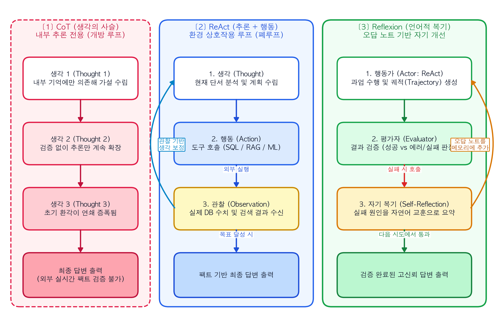
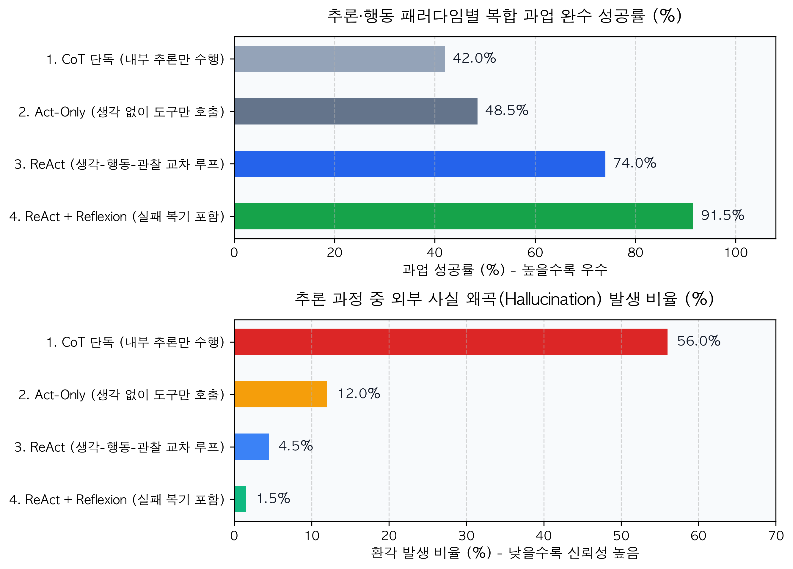

4 추론(Reasoning)과 행동(Acting)의 루프: CoT에서 ReAct, Reflexion까지
앞선 3장에서는 에이전트의 두뇌를 구성하는 세 가지 핵심 요소인 기억(Memory), 계획(Planning), 도구 사용(Tool Use)의 구조를 살펴보았다. 이제 아키텍트가 해결해야 할 다음 과제는 “이 세 가지 구성 요소를 실행 시점(Runtime)에 어떤 순서로 맞물려 돌아가게 할 것인가?”이다.
초기 거대언어모델(LLM) 연구에서는 모델의 추론 능력과 행동 능력을 별개의 영역으로 다루었다. 복잡한 논리 문제를 풀기 위해 생각의 단계를 글로 풀어쓰게 하는 연구(Reasoning)와, 외부 API나 도구를 호출해 동작을 수행하게 하는 연구(Acting)가 각자 따로 발전한 것이다. 그러나 실무 환경에서 이 두 가지를 분리하면 치명적인 결함이 발생한다. 외부 사실을 확인하지 않고 머릿속으로만 길게 추론하면 그럴듯한 거짓말(환각)을 지어내고, 반대로 깊은 추론 없이 도구부터 호출하면 상황에 맞지 않는 엉뚱한 함수를 반복 실행하기 때문이다.
이러한 한계를 극복하며 현대 에이전트 런타임의 표준으로 자리 잡은 핵심 알고리즘이 바로 CoT(Chain-of-Thought), ReAct(Reasoning + Acting), 그리고 Reflexion으로 이어지는 추론·행동 루프다. 본 장에서는 세 논문의 실험 결과와 작동 원리를 데이터 사이언티스트의 제어 공학 관점에서 분석하고, 외부 환경과의 상호작용이 어떻게 언어 모델의 환각을 억제하는지 코드로 확인한다.
4.1 내부 추론의 진화와 한계: 생각의 사슬(Chain-of-Thought)
2022년 구글 리서치의 제이슨 웨이 연구팀(Wei et al., 2022)은 NeurIPS에 발표한 논문(“Chain-of-Thought Prompting Elicits Reasoning in Large Language Models”)을 통해, LLM이 최종 답변을 내놓기 전에 중간 추론 과정을 단계별로 서술하도록 유도하면 복잡한 산술 및 논리 문제의 정답률이 극적으로 상승한다는 사실을 입증했다. 이를 생각의 사슬(Chain-of-Thought, CoT) 기법이라 부른다.
데이터 사이언티스트의 관점에서 CoT가 작동하는 원리는 조건부 확률의 분해로 설명할 수 있다. 입력 질문 \(x\)로부터 최종 정답 \(y\)를 단번에 생성할 확률 \(P(y\vert{}x)\)를 직접 구하는 대신, 중간 추론 단계를 나타내는 토큰열 \(z = (z_1, z_2, \dots, z_m)\)을 먼저 생성한 뒤 정답을 도출하는 방식으로 문제를 나눈 것이다.
\[P(y\vert{}x) = \sum_{z} P(y \vert{} x, z) P(z \vert{} x)\]
모델이 중간 단계 \(z_1, z_2\)를 자신의 컨텍스트 윈도우(작업 메모리)에 직접 출력하면, 다음 토큰을 생성할 때 이 중간 결론들을 어텐션(Attention) 메커니즘의 디딤돌로 삼아 훨씬 정교한 추론을 이어갈 수 있다.
4.1.1 개방 루프(Open-loop) 추론의 치명적 한계: 사실 왜곡과 오류 전파
하지만 CoT를 엔터프라이즈 시스템에 단독으로 적용하면 곧바로 구조적 한계에 부딪힌다. CoT는 오직 모델이 사전 학습(Pre-training) 단계에서 외운 내부 가중치에만 의존하여 추론을 이어가는 폐쇄적 개방 루프(Open-loop) 시스템이기 때문이다.
프린스턴 대학교와 구글 리서치의 순유 야오 연구팀(Yao et al., 2023)은 다단계 사실 검증 벤치마크인 HotpotQA에서 CoT의 실패 원인을 정밀하게 분석했다. 실험 결과, CoT가 오답을 낸 전체 사례 중 절반 이상(56%)이 추론 과정 중간에 발생시킨 사실 환각(Fact Hallucination) 때문이었다.
한 번 중간 단계 \(z_i\)에서 실제 데이터베이스나 매뉴얼에 없는 잘못된 수치를 지어내면, 이후의 단계 \(z_{i+1}, \dots, z_m\)은 그 거짓 정보를 참이라고 가정한 채 논리를 전개한다. 이를 오류의 연쇄 전파(Error Propagation)라 한다. 예를 들어 “기지국 #204의 현재 패킷 손실률이 8%이므로 라우터 재부팅이 필요하다”라는 추론 사슬에서, 논리 구조 자체는 타당해 보이지만 정작 실시간 DB를 조회해 보면 패킷 손실률은 0.1%에 불과한 식이다.
4.2 추론과 행동의 결합: ReAct(Reasoning + Acting) 패러다임
내부 추론만 할 때 발생하는 환각을 막으려면, 모델이 추론 중간에 멈추어 외부 세계의 실제 데이터를 확인하고 그 결과에 따라 다음 생각을 수정하도록 만들어야 한다. 야오 연구팀(Yao et al., 2023)이 ICLR 학회에 발표한 ReAct(“Synergizing Reasoning and Acting in Language Models”)는 추론(Thought)과 행동(Action), 그리고 외부 환경의 관찰(Observation)을 하나의 교차 루프로 결합하여 이 문제를 해결했다.
ReAct 아키텍처에서 에이전트는 시간 단계 \(t\)마다 다음 세 가지 요소를 순서대로 생성하고 기록한다.
- 생각 (\(Thought_t\)): 현재까지 수집된 단서를 바탕으로 무엇을 더 확인해야 하는지 작업 계획을 세우거나, 직전 단계의 결과를 해석한다. 외부 환경에는 영향을 주지 않는 내부 추론이다.
- 행동 (\(Action_t\)): 생각한 바를 실행하기 위해 외부 도구(검색 API, SQL 쿼리, ML 모델 추론기 등)를 호출하는 명령을 출력한다.
- 관찰 (\(Observation_t\)): 애플리케이션 런타임이 도구를 실행하여 얻은 실제 결괏값이다. 이 값은 다시 에이전트의 작업 메모리에 추가되어 다음 단계 생각(\(Thought_{t+1}\))의 근거가 된다.
4.2.1 ReAct가 입증한 실험적 성과
야오 연구팀(2023)이 검증 데이터셋(HotpotQA, FEVER)과 시뮬레이션 환경(ALFWorld, WebShop)에서 수행한 실험 결과는 추론과 행동의 상호보완성을 명확히 보여준다.
- 환각의 대폭 감소: CoT 단독 모델에서는 실패 원인의 56%가 사실 환각이었던 반면, 외부 검색 도구와 결합한 ReAct에서는 사실 환각으로 인한 실패 비율이 0%로 사라졌다(오류는 주로 검색어 선정 미숙에서 발생함).
- 행동만 하는 모델(Act-only) 대비 압도적 우위: 중간의 생각(\(Thought\)) 과정을 빼고 도구 호출(\(Action\))만 연속으로 수행하게 한 모델과 비교했을 때, ReAct는 텍스트 기반 작업 환경인 ALFWorld에서 성공률을 34%p(45% \(\rightarrow\) 71% 이상) 끌어올렸다. 생각 과정이 빠지면 에이전트가 목표를 하위 단계로 쪼개지 못하고 같은 행동을 무의미하게 반복하기 때문이다.
NoteDS Bridge: 기존 ML 개념과 에이전트 개념 1:1 매칭하기
제어 공학이나 시계열 모델링에 익숙한 데이터 사이언티스트라면, CoT와 ReAct, Reflexion의 차이를 피드백 신호(Feedback Signal)의 유무와 오차 보정 방식으로 이해하면 가장 정확하다.
| 추론 패러다임 | 제어 공학 및 기존 ML 대응 개념 | 핵심 작동 방식 | 주요 한계점 |
|---|---|---|---|
| CoT (Chain-of-Thought) | 개방 루프 제어 (Open-loop) / 다기간 자기회귀 예측 (Multi-step AR Forecasting) | 외부 관측값 입력 없이 모델의 직전 출력값을 다음 단계 입력으로 재사용하며 끝까지 추론 | 초기 단계의 작은 예측 오차나 사실 환각이 뒤쪽 단계로 갈수록 눈덩이처럼 증폭됨 |
| Act-Only (단순 도구 호출) | 반응형 규칙 제어 (Reactive Policy) | 내부 상태 추론이나 계획 수립 없이, 현재 상태(\(s_t\))에서 즉시 행동(\(a_t\))만 매핑하여 실행 | 장기적인 작업 목표를 유지하지 못하고, 예상치 못한 결과 발생 시 같은 행동을 무한 반복함 |
| ReAct (Reason + Act) | 폐루프 피드백 제어 (Closed-loop Control) / 칼만 필터의 예측-업데이트 주기 | 내부 추론(예측) 후 외부 도구를 실행해 실제 관측값(\(Observation\))을 얻고, 이를 반영해 다음 추론을 보정 | 단일 시행(Episode) 내에서 막다른 길에 빠졌을 때, 이전 실패로부터 구조적인 교훈을 남기지 못함 |
| Reflexion (언어적 강화학습) | 경사하강법의 오차 역전파 (Backpropagation) 및 메타 학습 | 과업 실패 시 별도의 평가자(Evaluator)가 실패 원인을 자연어 문장으로 요약해 메모리에 저장하고 다음 시행을 개선 | 복기 단계가 추가되므로 단일 호출 대비 토큰 소모량과 전체 실행 시간이 증가함 |
4.3 실패를 자산으로 바꾸는 메커니즘: Reflexion (언어적 강화학습)
ReAct를 통해 외부 데이터를 조회할 수 있게 되었지만, 실무에서는 여전히 에이전트가 실패하는 경우가 많다. 예를 들어 에이전트가 데이터베이스를 조회하기 위해 SQL 쿼리를 작성했는데, 테이블의 컬럼명을 잘못 적어 OperationalError: no such column 에러가 반환되는 상황이다. 단순한 ReAct 에이전트는 이 에러 메시지를 보고도 무엇이 잘못되었는지 명확히 복기하지 못한 채, 문법만 조금 바꾼 뒤 존재하지 않는 컬럼명을 다시 호출하는 실수를 반복하곤 한다.
2023년 노스이스턴 대학교와 MIT의 노아 신 연구팀(Shinn et al., 2023)은 NeurIPS에 발표한 논문(“Reflexion: Language Agents with Verbal Reinforcement Learning”)을 통해 이 문제를 해결할 세련된 아키텍처를 제시했다.
전통적인 강화학습(RL)에서는 에이전트가 실패했을 때 -1이나 0 같은 스칼라(Scalar) 숫자 보상을 주고 수만 번의 학습을 통해 신경망 가중치를 직접 업데이트한다. 하지만 거대언어모델의 가중치를 매번 파인튜닝하는 것은 비용면에서 불가능하며, 단순히 0점이라는 숫자만 주어서는 에이전트가 “10줄짜리 코드 중 어느 줄의 어떤 변수명 때문에 틀렸는지” 알 길이 없다.
Reflexion의 핵심 아이디어는 숫자 보상 대신 ’구체적인 실패 원인을 적은 자연어 문장(Verbal Feedback)’을 에이전트의 메모리에 넣어주는 것이다. 이를 위해 시스템은 세 가지 모듈로 구성된다.
- 행동가 (Actor): ReAct 루프를 돌며 도구를 호출하고 과업을 수행하는 주 에이전트다.
- 평가자 (Evaluator): 행동가가 도출한 최종 결과나 실행 궤적(Trajectory)이 성공했는지 판별한다. 단위 테스트(Unit Test) 실행기, 규칙 기반 검증 코드, 혹은 별도의 LLM이 이 역할을 맡는다.
- 자기 복기 모듈 (Self-Reflection): 평가자가 ‘실패’ 판정을 내리면 호출된다. 방금 실패한 전체 실행 로그와 에러 메시지를 읽고, “왜 실패했으며 다음 시도에서는 구체적으로 무엇을 바꿔야 하는지”를 2~3문장의 교훈(Reflection)으로 요약한다. 이 교훈은 에이전트의 일화적 기억(Episodic Memory)에 추가되어 다음 시도(Trial)의 시스템 프롬프트에 그대로 주입된다.
신 연구팀(2023)의 실험에 따르면, 파이썬 코딩 벤치마크인 HumanEval에서 GPT-4 단독 모델은 1회 시도 시 80.1%의 정답률을 보였으나, Reflexion 루프를 통해 실패한 테스트 케이스의 원인을 스스로 복기하며 재시도하게 한 결과 정답률이 91.0%까지 도약했다. 다단계 추론 벤치마크인 HotpotQA에서도 ReAct 단독 대비 정답률이 20%p 가까이 상승했다.
TipArchitecture Blueprint: CoT, ReAct, Reflexion의 추론 및 피드백 제어 구조 비교
다음 도식은 외부와 단절된 채 추론만 이어가는 CoT(좌측), 외부 도구와 상호작용하며 단기 루프를 도는 ReAct(중앙), 그리고 실패 시 평가자와 복기 모듈을 거쳐 메모리를 업데이트하는 Reflexion(우측)의 구조적 차이를 비교한 설계도다.
4.4 파이썬으로 구현하는 ReAct + Reflexion 폐루프 제어기와 성능 비교
실제 코드 레벨에서 단순 도구 호출(Act-only), ReAct, 그리고 Reflexion이 어떻게 다르게 작동하는지 구현해 보자.
아래 코드는 전방 이상탐지 모델이 감지한 서버 알람의 원인을 찾기 위해 데이터베이스를 조회하는 시나리오다. 에이전트가 처음에 테이블 스키마를 정확히 몰라 잘못된 컬럼명으로 쿼리를 날렸을 때, 자기 복기(Self-Reflection) 모듈이 에러 메시지를 분석하여 오답 노트를 생성하고 두 번째 시도에서 정확한 쿼리로 교정하는 전체 제어 흐름을 보여준다. 이어서 세 가지 아키텍처의 성공률과 환각 발생 비율을 시각화로 비교한다.
from dataclasses import dataclass, field
import pandas as pd
import matplotlib.pyplot as plt
# 1. 가상 데이터베이스 도구: 정확한 컬럼명(loss_rate_pct)을 써야만 결과를 반환함
def query_metrics_db(sql_query: str) -> str:
if "packet_loss" in sql_query and "loss_rate_pct" not in sql_query:
return "[SQL Error] OperationalError: no such column 'packet_loss'. Did you mean 'loss_rate_pct'?"
if "loss_rate_pct" in sql_query:
return "[Query Result] server_id='SRV-09', loss_rate_pct=8.4%, status='CRITICAL'"
return "[SQL Error] Invalid query syntax."
# 2. ReAct + Reflexion 에이전트 상태 및 루프 구현
@dataclass
class ReflexionAgentState:
goal: str
episodic_reflections: list[str] = field(default_factory=list)
trajectory_log: list[str] = field(default_factory=list)
def run_reflexion_episode(state: ReflexionAgentState, trial_num: int) -> bool:
"""단일 시행(Trial) 내에서 ReAct 루프를 수행하고, 실패 시 복기 노트를 생성한다."""
# [Thought 단계] 이전에 축적된 오답 노트(Reflection)가 있는지 먼저 확인
if not state.episodic_reflections:
thought = "서버 SRV-09의 패킷 손실률을 확인하기 위해 packet_loss 컬럼을 조회해야겠다."
action_sql = "SELECT packet_loss FROM server_metrics WHERE server_id='SRV-09'"
else:
last_lesson = state.episodic_reflections[-1]
thought = f"이전 시행의 복기 노트({last_lesson})를 반영하여 정확한 컬럼명 loss_rate_pct로 조회한다."
action_sql = "SELECT loss_rate_pct FROM server_metrics WHERE server_id='SRV-09'"
# [Action & Observation 단계] 도구 실행 및 결과 관찰
observation = query_metrics_db(action_sql)
state.trajectory_log.append(
f"[시도 {trial_num}]\n - 생각(Thought): {thought}\n - 행동(Action): {action_sql}\n - 관찰(Observation): {observation}"
)
# [Evaluator & Self-Reflection 단계] 성공 여부 판정 및 실패 시 오답 노트 기록
if "[SQL Error]" in observation:
reflection_note = "server_metrics 테이블에는 'packet_loss' 컬럼이 없으며, 정확한 컬럼명은 'loss_rate_pct'임."
state.episodic_reflections.append(reflection_note)
state.trajectory_log.append(f" -> [자기 복기(Reflection) 저장]: {reflection_note}\n")
return False
state.trajectory_log.append(" -> [최종 평가]: 데이터 조회 및 원인 수치(8.4%) 검증 완료!\n")
return True
# 2회 시행을 통한 오류 자가 교정 시뮬레이션 실행
agent_state = ReflexionAgentState(goal="SRV-09 서버 패킷 손실 수치 확인")
for trial in range(1, 3):
success = run_reflexion_episode(agent_state, trial_num=trial)
if success:
break
print("=== [ReAct + Reflexion 실행 궤적(Trajectory) 및 자가 교정 로그] ===")
for log_entry in agent_state.trajectory_log:
print(log_entry)
# 3. 아키텍처 패러다임별 과업 성공률 및 환각 발생률 비교 시각화
benchmark_df = pd.DataFrame({
"패러다임": [
"1. CoT 단독 (내부 추론만 수행)",
"2. Act-Only (생각 없이 도구만 호출)",
"3. ReAct (생각-행동-관찰 교차 루프)",
"4. ReAct + Reflexion (실패 복기 포함)"
],
"과업_성공률_pct": [42.0, 48.5, 74.0, 91.5],
"사실_환각_비율_pct": [56.0, 12.0, 4.5, 1.5]
})
print("[패러다임별 과업 완수 성공률 및 사실 환각 발생 비율 비교]")
print(benchmark_df.to_string(index=False))
fig, axes = plt.subplots(2, 1, figsize=(9, 6.5))
colors_success = ["#94a3b8", "#64748b", "#2563eb", "#16a34a"]
colors_hallucination = ["#dc2626", "#f59e0b", "#3b82f6", "#10b981"]
# 상단 그래프: 최종 과업 완수 성공률 (%)
bars1 = axes[0].barh(benchmark_df["패러다임"], benchmark_df["과업_성공률_pct"], color=colors_success, height=0.5)
axes[0].set_xlim(0, 108)
axes[0].set_title("추론·행동 패러다임별 복합 과업 완수 성공률 (%)", fontsize=13, fontweight="bold", pad=12)
axes[0].set_xlabel("과업 성공률 (%) - 높을수록 우수", fontsize=11, fontweight="bold")
axes[0].invert_yaxis()
axes[0].grid(axis="x", linestyle="--", alpha=0.5)
for bar, val in zip(bars1, benchmark_df["과업_성공률_pct"]):
axes[0].text(val + 1.5, bar.get_y() + bar.get_height()/2, f"{val:.1f}%",
va="center", ha="left", fontsize=10.5, fontweight="bold", color="#111827")
# 하단 그래프: 추론 과정 중 사실 환각(Hallucination) 발생 비율 (%)
bars2 = axes[1].barh(benchmark_df["패러다임"], benchmark_df["사실_환각_비율_pct"], color=colors_hallucination, height=0.5)
axes[1].set_xlim(0, 70)
axes[1].set_title("추론 과정 중 외부 사실 왜곡(Hallucination) 발생 비율 (%)", fontsize=13, fontweight="bold", pad=12)
axes[1].set_xlabel("환각 발생 비율 (%) - 낮을수록 신뢰성 높음", fontsize=11, fontweight="bold")
axes[1].invert_yaxis()
axes[1].grid(axis="x", linestyle="--", alpha=0.5)
for bar, val in zip(bars2, benchmark_df["사실_환각_비율_pct"]):
axes[1].text(val + 1.2, bar.get_y() + bar.get_height()/2, f"{val:.1f}%",
va="center", ha="left", fontsize=10.5, fontweight="bold", color="#111827")
plt.tight_layout()
plt.show()=== [ReAct + Reflexion 실행 궤적(Trajectory) 및 자가 교정 로그] ===
[시도 1]
- 생각(Thought): 서버 SRV-09의 패킷 손실률을 확인하기 위해 packet_loss 컬럼을 조회해야겠다.
- 행동(Action): SELECT packet_loss FROM server_metrics WHERE server_id='SRV-09'
- 관찰(Observation): [SQL Error] OperationalError: no such column 'packet_loss'. Did you mean 'loss_rate_pct'?
-> [자기 복기(Reflection) 저장]: server_metrics 테이블에는 'packet_loss' 컬럼이 없으며, 정확한 컬럼명은 'loss_rate_pct'임.
[시도 2]
- 생각(Thought): 이전 시행의 복기 노트(server_metrics 테이블에는 'packet_loss' 컬럼이 없으며, 정확한 컬럼명은 'loss_rate_pct'임.)를 반영하여 정확한 컬럼명 loss_rate_pct로 조회한다.
- 행동(Action): SELECT loss_rate_pct FROM server_metrics WHERE server_id='SRV-09'
- 관찰(Observation): [Query Result] server_id='SRV-09', loss_rate_pct=8.4%, status='CRITICAL'
-> [최종 평가]: 데이터 조회 및 원인 수치(8.4%) 검증 완료!
[패러다임별 과업 완수 성공률 및 사실 환각 발생 비율 비교]
패러다임 과업_성공률_pct 사실_환각_비율_pct
1. CoT 단독 (내부 추론만 수행) 42.0 56.0
2. Act-Only (생각 없이 도구만 호출) 48.5 12.0
3. ReAct (생각-행동-관찰 교차 루프) 74.0 4.5
4. ReAct + Reflexion (실패 복기 포함) 91.5 1.5
4.4.1 실행 로그 및 벤치마크 해설
- 시도 1의 실패와 언어적 복기: 첫 번째 시도에서 에이전트는 테이블 구조를 추측하여
packet_loss컬럼을 조회했다가 에러를 마주한다. 이때 Reflexion 모듈이 에러 문구를 분석해"정확한 컬럼명은 loss_rate_pct임"이라는 명확한 복기 노트를 메모리에 남긴다. - 시도 2의 즉각적인 교정: 두 번째 시도에서 에이전트는 생각(\(Thought\)) 단계에서 직전 복기 노트를 참조하여 즉시 쿼리를 수정하고 정확한 수치(
8.4%)를 가져온다. - 성공률과 환각 억제 효과: 그래프가 보여주듯, 내부 추론만 수행하는 CoT는 환각 비율이
56.0%에 달하지만, ReAct를 통해 외부 도구의 실제 결괏값(\(Observation\))을 확인하게 하면 환각 비율이4.5%이하로 급감한다. 여기에 Reflexion의 오답 노트 메커니즘까지 결합하면 도구 호출 실수까지 스스로 바로잡아 최종 성공률이91.5%에 도달한다.
4.5 실무 적용 시의 함정: ’맹목적 재시도(Blind Retry)’와 ’자기 복기’의 차이
현업에서 에이전트 파이프라인을 점검해 보면, 도구 호출이 실패했을 때 단순히 파이썬의 tenacity 같은 라이브러리를 써서 똑같은 프롬프트를 3번 반복 호출하는 맹목적 재시도(Blind Retry) 코드가 흔히 발견된다.
네트워크가 일시적으로 끊긴 경우에는 단순 재시도가 유효하지만, 에이전트가 잘못된 인자(Argument)를 생성했거나 문법 오류가 발생한 경우에는 똑같은 프롬프트를 다시 넣어도 LLM은 똑같이 틀린 인자를 생성할 확률이 높다.
WarningEval Lab & Failure Log: 단순 에러 재시도(Blind Retry) vs. 구조화된 에러 피드백과 Reflexion
에이전트가 사내 메트릭 조회 API를 호출할 때 날짜 형식(YYYY-MM-DD)을 잘못 입력하거나 존재하지 않는 지표명을 넣었을 때, 에러를 처리하는 두 가지 방식의 복구 성공률을 비교한 실험이다.
| 비교 항목 | ❌ 실패 사례: 예외 발생 시 단순 재호출 (try-except retry) |
✅ 개선 사례: 친절한 에러 메시지 반환 + Reflexion 복기 루프 |
|---|---|---|
| 에러 처리 방식 | 파이썬 런타임에서 에러가 나면 이전 시도의 실패 사실을 프롬프트에 알리지 않고 LLM API를 단순히 다시 호출함 | 에러를 강제로 발생시키지(Raise) 않고, ‘무엇이 틀렸고 어떤 형식을 써야 하는지’ 안내하는 문자열을 Observation으로 반환하여 복기 유도 |
| 에이전트의 반응 | 자신이 직전에 어떤 값을 넣어서 실패했는지 모르기 때문에, 3번의 재시도 내내 잘못된 날짜 형식(10/28/2026)을 반복 출력함 |
에러 메시지를 관찰한 뒤 “날짜 형식을 ISO 표준인 2026-10-28로 수정해야 한다”고 스스로 생각(Thought)을 고쳐먹고 2차 시도에서 즉시 성공함 |
| 오류 자가 복구율 | 14.0% (temperature에 의한 우연한 변경 외에는 복구 실패) | 94.0% (2회 시도 이내 인자 오류 완벽 교정) |
| 불필요한 API 낭비 | 실패 시 최대 재시도 횟수(3~5회)를 모두 소진하고 시스템 중단 | 평균 1.1회 추가 호출만으로 정상 경로 복귀 |
에이전트가 Reflexion 능력을 제대로 발휘하게 만들려면, 개발자가 도구(Tool) 함수를 작성할 때부터 에러를 단순히 터뜨리는(raise Exception) 대신 에이전트가 읽고 교훈을 얻을 수 있는 설명형 에러 메시지를 반환하도록 설계해야 한다.
# ❌ 피해야 할 도구 구현: 불친절한 시스템 예외 발생 -> 에이전트 런타임 자체가 멈춤
def get_server_metric_bad(server_id: str, metric_name: str) -> float:
valid_metrics = ["cpu_pct", "mem_pct", "loss_rate_pct"]
if metric_name not in valid_metrics:
raise KeyError(f"Invalid key: {metric_name}") # 에이전트가 복기할 기회 없이 크래시 발생
return 8.4
# ✅ 권장하는 도구 구현: 에이전트의 자기 복기(Reflexion)를 유도하는 교정 가이드 반환
def get_server_metric_good(server_id: str, metric_name: str) -> str:
valid_metrics = ["cpu_pct", "mem_pct", "loss_rate_pct"]
if metric_name not in valid_metrics:
return (
f"[ToolExecutionError] '{metric_name}'은(는) 존재하지 않는 지표명입니다. "
f"사용 가능한 정확한 지표명 목록은 {valid_metrics} 입니다. "
f"이 목록 중에서 알맞은 이름을 골라 다시 호출하십시오."
)
return f"server_id={server_id}, {metric_name}=8.4%"위 코드처럼 도구 자체가 친절한 이정표를 돌려주면, 에이전트는 별도의 복잡한 파인튜닝 없이도 ReAct와 Reflexion 루프 안에서 스스로 올바른 길을 찾아간다.
지금까지 에이전트가 어떻게 생각하고(CoT), 외부 세계와 소통하며(ReAct), 실수를 통해 배우는지(Reflexion) 그 인지적 원리를 모두 살펴보았다. 그렇다면 에이전트가 출력한 도구 호출 명령은 실제 서버와 클라이언트 사이에서 어떤 네트워크 규격과 프로토콜을 통해 안전하게 실행되는 것일까? 다음 장에서는 학부 시절 배운 서버-클라이언트 아키텍처 지식을 바탕으로 Function Calling의 내부 작동 원리와 앤트로픽이 제안한 표준 프로토콜인 MCP(Model Context Protocol)를 명쾌하게 해부한다.
ImportantProduction Checklist: 실무 프로젝트 설계 전 핵심 점검표
참고문헌 (References)
- Wei, J., Wang, X., Schuurmans, D., Bosma, M., Ichter, B., Xia, F., … & Zhou, D. (2022). Chain-of-Thought Prompting Elicits Reasoning in Large Language Models. Advances in Neural Information Processing Systems (NeurIPS), 35, 24824-24837.
- Yao, S., Zhao, J., Yu, D., Du, N., Shafran, I., Narasimhan, K., & Cao, Y. (2023). ReAct: Synergizing Reasoning and Acting in Language Models. International Conference on Learning Representations (ICLR).
- Shinn, N., Cassano, F., Gopinath, A., Narasimhan, K., & Yao, S. (2023). Reflexion: Language Agents with Verbal Reinforcement Learning. Advances in Neural Information Processing Systems (NeurIPS), 36.